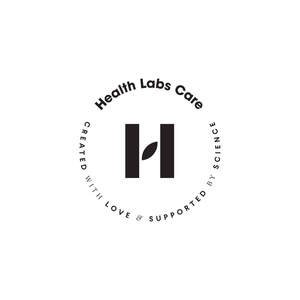

Trade Mark Journal No.2025/020 16 May 2025
UK00004186170 8 April 2025 (3,5,30,32,35,44)

- Class 3
- Make-up; Functional cosmetics; Make-up; Fluid creams [cosmetics]; Beauty care cosmetics; Cosmetics in the form of creams, Cosmetics in the form of gels, Cosmetics in the form of lotions, Cosmetics in the form of oils; Cosmetics for use on the skin; Cosmetics in the form of powders; Face and body gel; Face creams for cosmetic use; Skin care products; Facecare products; Face and body scrubs; Face and body masks; Make-up removing preparations, Make-up removing preparations; professional cosmetics; Cosmetics for the use on the hair; Bath salts; Shower gels; Soap; Cleansing milk for toilet purposes; Cosmetic balms, Gels and powders for the face, the body and the hands; Sun-tanning oils; After-sun preparations for cosmetic use; Facial and body make-up, Make-up preparations for the face and body; Shampoos; Gels for hair care, Foams for hair care, Hair care masks; Ethereal oils; Cleansing gels, Cleansing toners, Cosmetic cleansing preparations; cosmetic peelings; Skin cleansing lotion; Skin conditioners; Skin emollients; Skin lighteners; skin moisturizing gel; Skin toners; Tissues impregnated with cleaning preparations; Wrinkle removing skin care preparations; Cosmetic kits; Preparations for washing purposes; Cosmetic sun-tanning preparations; Sunscreen preparations; Cosmetics for skin tanning; Perfumery; Hair lotions; Bath oils; Oils for toilet purposes; Oils for cosmetic purposes; Oils for perfumes and scents; Bath lotions; Intimate hygiene preparations; Essential oils and aromatic extracts.
- Class 5
- Dietary supplements for humans; Vitamin preparations; Medicinal preparations; Nutritional supplements; Anti-oxidant food supplements; Dietary supplements for humans not for medical purposes; Health food supplements for persons with special dietary requirements; Nutritional supplements; Food supplements; Dietary supplements with a cosmetic effect; Fitness and endurance supplements; Food supplements in liquid form; Albumen preparations; Diet capsules; Dietary and nutritional preparations; Food for special medical purposes; dietary supplemental drink mixes; Dietary supplemental drinks; Vitamin drinks; dietary supplements in liquid form; dietary supplements in powdered form; Herbal dietary supplements for persons special dietary requirements; Powdered drink mixes with dietary supplements; Prebiotic supplements; Probiotic supplements; Albumin dietary supplements; Protein powder dietary supplements; Protein shakes; Personalised dietary supplements.
- Class 30
- Coffee with plant extracts; Tea; Matcha being powdered tea; Cocoa; Artificial coffee; Coffee with additives.
- Class 32
- Soft drinks; Vitamin fortified non-alcoholic beverages; Non-alcoholic beverages containing fruit juices; Smoothies; Green vegetable juice beverages; Nutritionally fortified beverages; Beverages enriched with plant extracts; Beverages containing vitamins.
- Class 35
- Retail and wholesale services provided online, in relation to the following goods: Supplements for food, Cosmetics, Products for special nutritional use, medical supplies; social media marketing services; Advertising and marketing; Advertising and marketing services provided by means of social media; Targeted marketing; Internet marketing; Market campaigns; Distribution of advertising, marketing and promotional material; Providing marketing information via websites; Retail services via global computer networks related to foodstuffs; Retailservices in relation the following goods: Supplements for food, Cosmetics; Retail services in relation to dietetic preparations; Advertising via electronic media and specifically the internet; Online advertising on a computer network; Publication of publicity materials on-line.
- Class 44
- Providing information, in relation to the following goods: dietetic dietary supplements, Cosmetics and Plant food; Consultancy relating to personalised dietary supplementation by means of dietary supplements; Consultancy in the field of nutrition, Consultancy relating to food; Consultancy services relating to cosmetics; Consultancy relating to diets, Providing of dietary advice, consultancy in the field of nutrition; Consultancy in the field of nutrition and dietary supplements; Personalisation of supplementation plans; dietary guidance; Dietetic advice; Advice and information in the field of health; Advice relating to dietary supplements; Providing of information on health, nutritional advice, cosmetics and dietary supplements via websites or telecommunication channels.
Health Labs Care S.A.
Representative: Pinsent Masons LLP